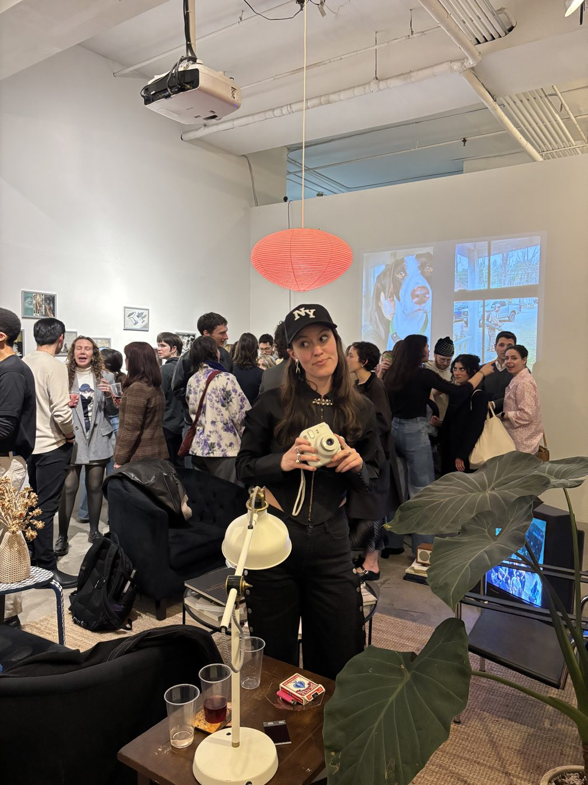
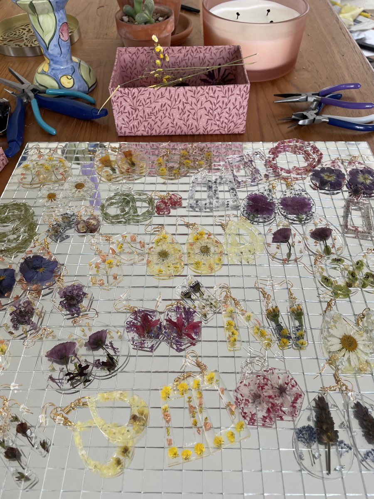
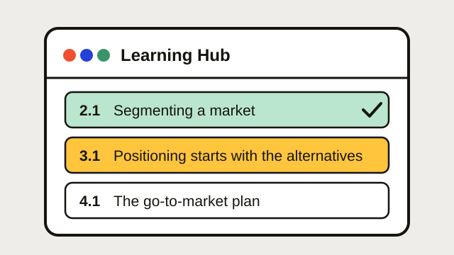

Film photos, side projects and a learning hub. Pick one.

My creative passion. Shooting film sharpens how I observe the world, and I curated a gallery show for my Brooklyn film club.
See the photos →
I love pushing myself to try new things, from building with AI to volunteering and creative side projects.
Take a look →
As I explore different career paths, I'm building a learning hub for each role I'm curious about: product marketing, product management and brand.
Start learning →psst, I love a good coffee chat